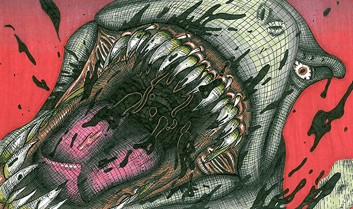
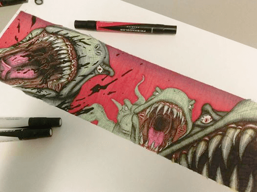
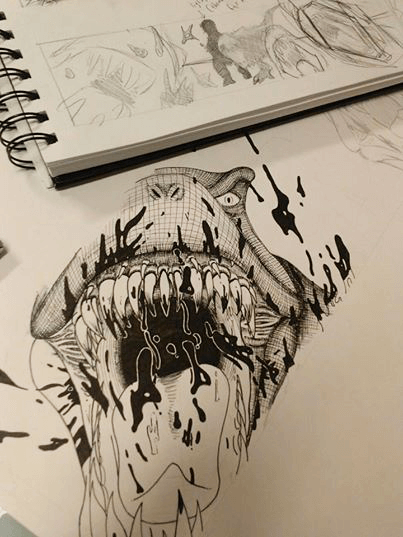
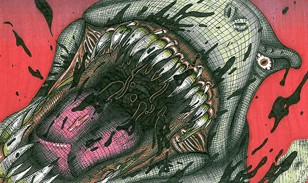
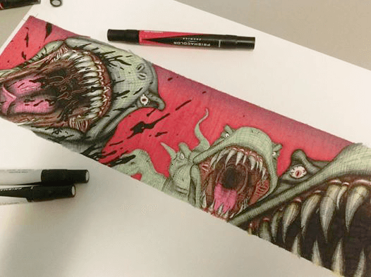
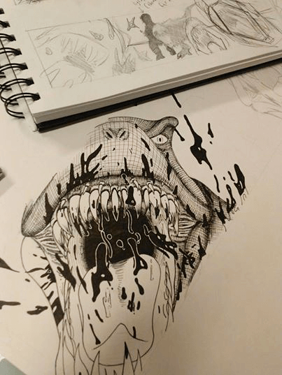

☰☰
☰☰
 





An Illustrative piece inspired by Virgil Finlay and Robert Crumb. I utilized my crosshatching style to create an illustration that parodies the harsh critics on Fox News.

This monster design draws inspiration from insects and microscopic organisms. This project served as an opportunity to experiment with textures and detail as it relates to the foreground and background.